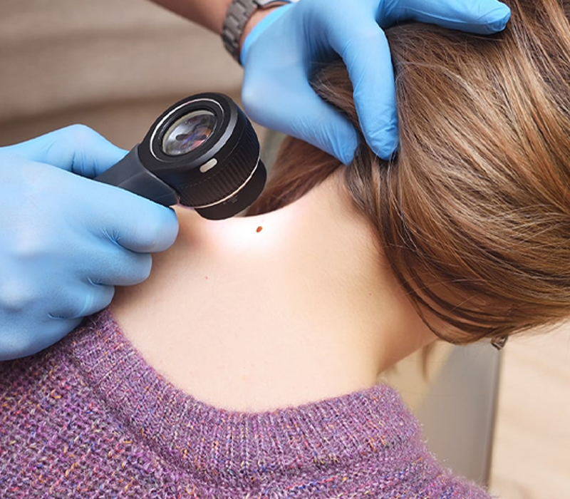
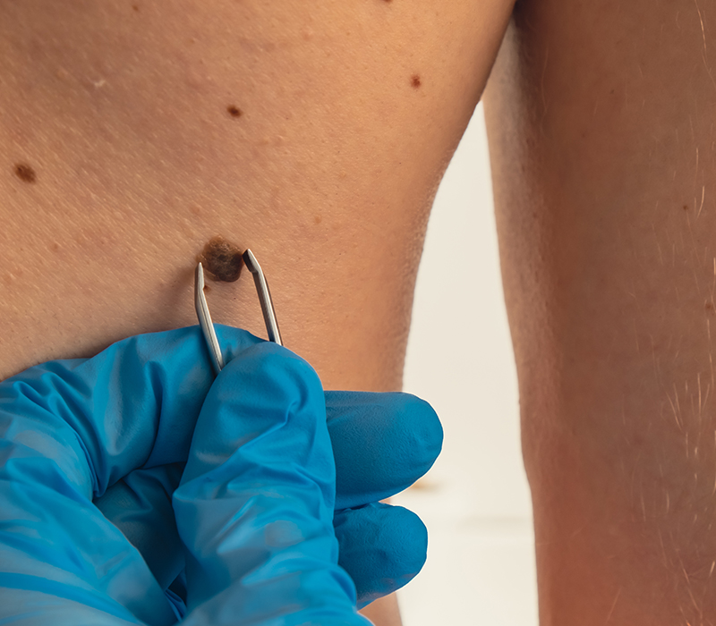
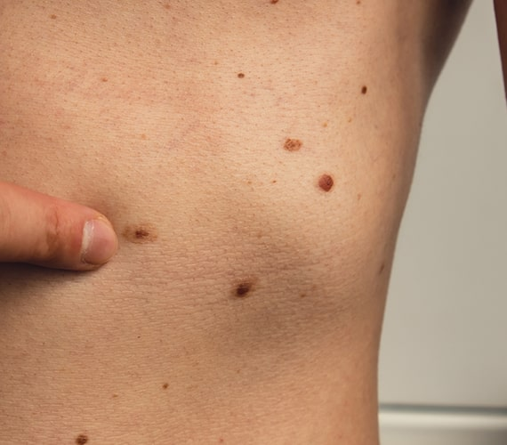
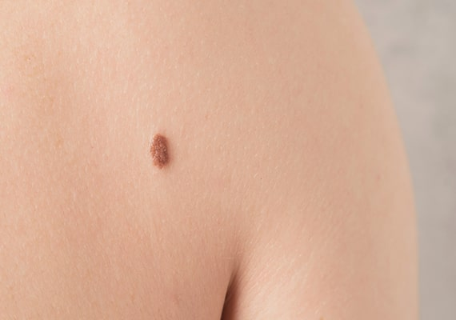

Need Help with Mole Mapping?
Our mole mapping service in London is managed by expert consultant dermatologists. Get in touch with us by filling in this contact form or calling 020 7467 3720.


At The London Dermatology Centre, we offer professional medical photography for mole surveillance. Mole mapping is a screening service for those at risk of or concerned about skin cancer. Our screening service allows for the early detection of suspicious moles that require additional examination. Through a series of high-quality photographs, a baseline document of all your moles is created to allow future comparison should you or your dermatologist suspect that a mole may be new or changing.

Mole mapping is a screening service designed to enable the early detection of any mole that is changing or new. This relatively new concept involves taking top-to-toe photos of the body using a specialised magnified camera lens, which allows the practitioner to zoom in on any suspicious mole to check for abnormalities in appearance. We recommend that anyone with moles has a yearly check-up to assess mole changes and identify new moles. This process allows our dermatologists to detect malignant melanoma at the earliest possible stage when it is most amenable to treatment and can be cured with minor surgery.

For anyone at risk of or concerned about skin cancer, our mole mapping service in London provides a convenient way to monitor your moles. Those at higher risk are recommended to have mole checks more regularly.

A mole is a small, dark, round lesion commonly found on the skin. Medically referred to as melanocytic naevi, moles are composed of melanocytes, which are cells that produce melanin. Melanin is the dark brown or black pigment responsible for the colour of moles, as well as hair and the iris in the eye. Most moles are harmless and do not cause any problems.

Some moles are present from birth, known as congenital moles, while others develop during childhood and throughout adult life. Moles can appear anywhere on the body, including areas frequently exposed to the sun, such as the face, arms, and back, as well as less exposed areas like the scalp, armpits, and feet. While the majority of moles are benign, it is essential to monitor them for any changes in size, shape, or colour, as these could indicate a need for further examination by a dermatologist. Regular mole checks are an important part of maintaining skin health and preventing potential skin issues. Get in touch with us to learn more about our mole mapping service.

On average, the mole mapping service takes between 30 minutes to an hour to complete. By the end of your appointment, a comprehensive ‘map’ of your moles will be created and saved in our system for future reference. On the day of your appointment, the dermatologist will run through the procedure with you and ask if you have any questions or concerns about any particular moles. You should inform the dermatologist if there has been any recent change in the colour, size, texture, or shape of your moles. Any moles that require further examination will be checked by the dermatologist with a dermatoscope (an illuminated hand-held lens with magnification).
The mole mapping system at our dermatology clinic combines total body mapping, dermoscopy, and consistent before-and-after photography to enable early detection of melanoma. The dermatologist will move the camera up and down the machine to create a full-body profile of all the moles on your skin. The FotoFinder Medicam HD technology allows highly magnified dermoscopy images of all your moles to be taken. This enables both immediate analysis of individual moles to produce a risk score and early detection of changes in any of your previous moles.

Your dermatologist will then advise you on whether any moles need further examination or the time frame in which you should return for another mole map. If you notice any changes or would like to come back sooner than advised, you can book an appointment to see your dermatologist. The mole mapping service is completely non-invasive, and you can return to work or your daily activities immediately after the appointment.

Any mole that the dermatologist identifies as abnormal will be examined further. The dermatologist will ask if you have noticed any changes in the mole or if the mole is new. Then, a dermatoscope will be used to closely examine the mole for any irregularities. If the mole is suspected to be malignant, the dermatologist will advise you to allow them to remove it for histological analysis. In most cases, we can do this on the same day. A pathological examination will then be carried out to determine whether the mole is benign (harmless) or malignant (cancerous) and needs treatment.
Melanoma is the name given to a cancerous mole. It is considered to be the most serious type of skin cancer due to its ability to spread rapidly to other parts of the body if not detected and treated early. Often, the first sign of melanoma developing is the appearance of a new mole or a change in a previous mole’s shape, colour, or size. The mole may also become itchy or bleed. These changes can occur over weeks to months, highlighting the importance of regular skin checks and mole mapping. Early detection of melanoma is crucial, as it can metastasise (spread) from the skin to other parts of the body, such as the lymph nodes, lungs, liver, and brain, leading to more severe health complications. Prompt diagnosis and treatment can significantly improve the prognosis and reduce the risk of melanoma spreading.

Around 13,000 new cases of melanoma are diagnosed each year, making it the 5th most common cancer in the UK. Unlike most other cancers, melanoma mainly affects those under 50 years of age. Melanoma kills more than 2000 people each year in the UK.
One of the main risk factors for developing melanoma is a family history of melanoma. You are also at increased risk if you have fair skin that burns easily, freckles, red hair, or a large number of moles. Those who have already had melanoma in the past or have a weakened immune system are also at increased risk.
The best way to reduce your risk of melanoma is by protecting your skin from the sun and not letting your skin burn. Always apply a sunscreen with a high protection factor of SPF 30 or more. You should apply sunscreen 15 to 30 minutes before going out in the sun, and remember to reapply every 2 to 3 hours and after swimming. Try to wear protective clothing such as a hat to protect your face, ears, and neck, as well as a pair of sunglasses with UV protection.

Another way to reduce your risk of melanoma is to check your moles regularly. If you notice any changes to an existing mole or are concerned about a new mole, you should have it examined by a dermatologist. The mole mapping service is a convenient way of monitoring your moles, and having them assessed by an experienced dermatologist who can determine if any need further investigation. For more information regarding our mole mapping service in London, please contact us on 020 7467 3720.
Mole mapping involves taking high-resolution images of your moles to track changes over time. It offers a more detailed and long-term approach compared to a single visual examination.
Mole mapping is ideal for individuals with numerous moles, a personal or family history of skin cancer, or noticeable changes in moles. It’s also helpful for monitoring hard-to-see areas like the back or scalp.
You’ll have a full-body skin examination, and digital photographs of your moles will be taken and securely stored. Any moles of concern will be closely examined by a dermatologist using a dermatoscope.
Yes, mole mapping is completely non-invasive and painless. It involves only photography and visual assessment—no needles, incisions or biopsies unless medically necessary.
For most patients, we recommend annual mole mapping to monitor for subtle changes. Higher-risk patients may benefit from more frequent reviews depending on their history.
Yes, your dermatologist will discuss their findings during the same appointment. If any mole appears suspicious, further steps will be explained clearly.
Yes, one of the key benefits of mole mapping is early detection of potential skin cancers like melanoma. Identifying changes early can lead to prompt treatment and better outcomes.
Mole mapping can be used for younger patients when clinically appropriate, especially if they have atypical moles or a strong family history. Your dermatologist will advise if it’s the right approach for your child.
If you require mole mapping in London, our dermatology clinic is conveniently located in the heart of London at 69 Wimpole Street. Bond Street and Baker Street underground stations are only a few minutes' walk away, and street parking is readily available. Please contact our team if you have any questions or require wheelchair access.
Monday - Friday: 9.00 AM - 5.30 PM
Saturday & Sunday: Closed
69 Wimpole Street,
London W1G 8AS.
Our mole mapping service in London is managed by expert consultant dermatologists. Get in touch with us by filling in this contact form or calling 020 7467 3720.